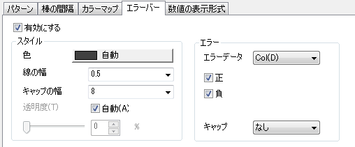
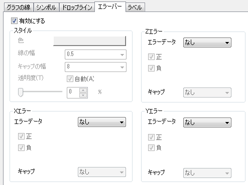

作図の詳細ダイアログのデータセットレベルにあるエラーバータブは3Dエラーバーのスタイル、エラーの方向、透明度を指定する事ができます。3Dエラーバーは3D散布図か3D曲面でのみ作成できます。
|  |  |
内容 |
3Dエラーバーを有効にするか指定します。
| 色 |
エラーバーを表示する色を選択します。自動を選択すると、エラーバーの色は、対応するシンボルの色(シンボルがあるデータプロットの場合)や線の色(シンボルがない場合)とマッチします。 |
|---|---|
| 『線の幅』コンビネーションボックス |
エラーバーの線の幅を入力します。 |
| 『キャップ横幅』コンビネーションボックス | キャップの横幅を入力します。 |
これは、エラーバーをどれぐらい透過させるか指定します。コンビネーションボックスに直接割合を入力するか、目盛りをスライドして値を決めます。0(透過なし)から100(完全に透過)まで入力できます。
| エラーデータ |
エラーバーをプロットするのに使用するデータを指定します。 |
|---|---|
| 『正』チェックボックス |
これをチェックすると、データプロットの上にエラーバーを表示します。 |
| 『負』チェックボックス |
これをチェックすると、データプロットの下にエラーバーを表示します。 |
| キャップ | エラーバーのキャップとして示す線を指定します。例えば、XYの線をキャップとしてZエラーに表示できます。 |